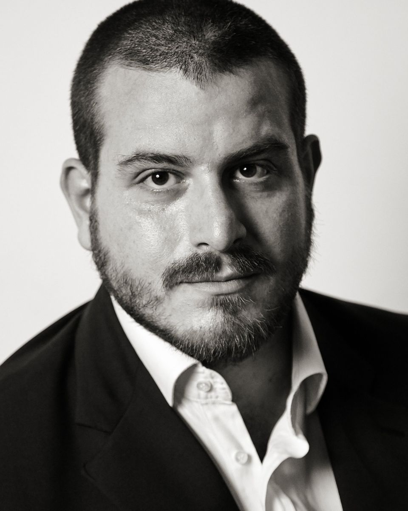

Psychotherapy for the moments when life puts you under pressure
I am Alberto Del Duca, a psychodynamic psychotherapist and emergency psychologist. I see people in my practice in Rome, in the Monteverde district, in Italian, English and French.

Mobilis in mobili · mobile in the moving element (the motto of the Nautilus, Jules Verne)
To change, while remaining yourself.
When it can help to talk
-
After a critical event
A sudden loss, an accident, an assault, something that changed everything. There is no need to wait for it to pass on its own.
-
When work weighs too much
Responsibilities, conflicts, a tiredness that does not go away. The feeling of holding everything up with no room left for yourself.
-
When anxiety gives no rest
Constant tension, restless nights, panic attacks, medical tests that find nothing.
-
When a relationship is struggling
In a couple or a family, the relationship can change starting from yourself, even if the other person does not want to come.
-
For those who live between countries
Missions, returns, relocations, the effort of feeling at home. Sessions in English, séances en français.
How I work
I listen in depth, with a psychodynamic approach that does not follow a single school. Emergency work taught me that under pressure the deepest mechanisms in each of us come to the surface: that is where you can truly understand and change, without ceasing to be yourself.
How it works
- The first meeting
- We get to know each other and work out together what you need. It can last up to an hour and a half, if needed. At the end, you decide whether to continue.
- Length and fees
- Sessions last 45 minutes. €70 in the morning, €80 in the evening after 5 pm, also online. The first meeting costs the same as any other session.
- In person and online
- The work begins in the practice in Monteverde. It can then continue online, for example during missions or business trips.
- Health expenses
- Under Italian tax rules, sessions can be deducted as medical expenses.
- Confidentiality
- What comes up stays between us, including with respect to your employer or the organisation you work for.